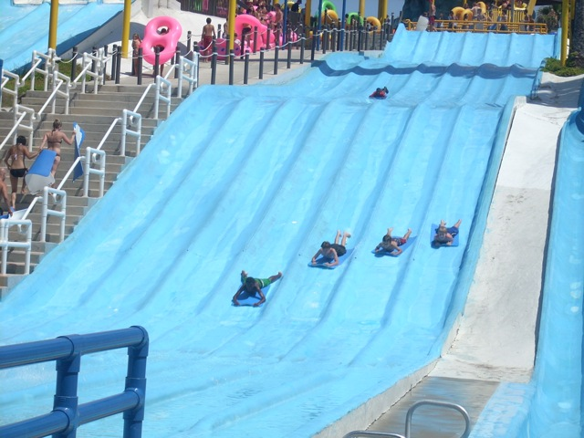
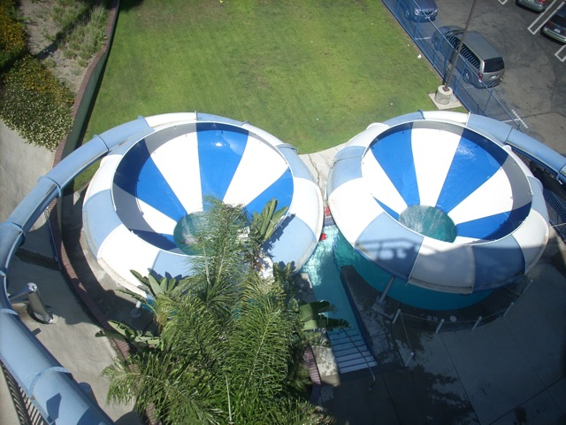
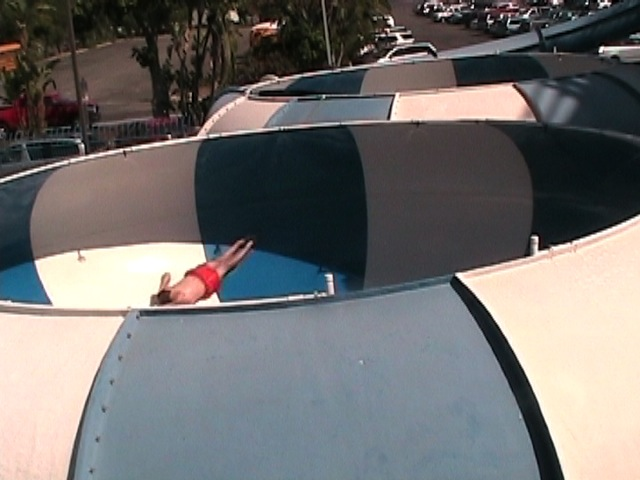
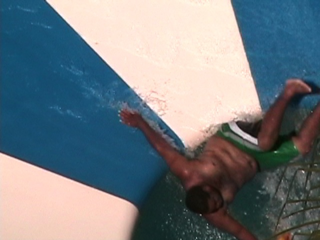
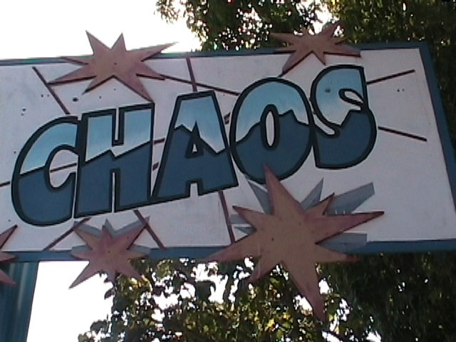

Wild Rivers 2009
All right! I took my first visit to Wild Rivers in 2007 and I LOVED IT!!! It was scheduled to close after the 2007 season, but it still hasn't closed yet and since this place is awsome, I decided to go again in 2009.
Yep. Incrediblecoasters has returned to Wild Rivers!
 Since we're at Wild Rivers, why not start out on one of the badass slides they have at Wild Rivers.
Since we're at Wild Rivers, why not start out on one of the badass slides they have at Wild Rivers.
So for those who haven't read the 2007 Wild Rivers Update and don't know about Bombay Blasters, Bombay Blasters is a slide that basically goes underground and then launches you into the water.
And then you splash down into the water.
And as you can see, you can fly out in many different ways.
 Next up, Ghetto Bamboo Racers.
Next up, Ghetto Bamboo Racers.
 Hope you're not to attached to those mats, cause they'll be flying away from you soon.
Hope you're not to attached to those mats, cause they'll be flying away from you soon.

It may be me, but it seemed like Surf Hill was better in 2007.
 Wahtubee. Though it doesn't do too much, it's still a pretty cool slide.
Wahtubee. Though it doesn't do too much, it's still a pretty cool slide.
Wahtubee Awsomeness!!
 Switzer Falls is also a pretty cool slide they have here.
Switzer Falls is also a pretty cool slide they have here.
While it's no Bombay Blasters, I still had alot of fun on it.
Like all waterparks, Wild Rivers has a wavepool. And like most other water parks, it's nothing special.
They also had a new upcharge attraction where you can rent a boogie board and go boogie boarding.
Grr!!! I'm the evil two headed Dragon Slide. While these kids slide down me, I'm planning the end of the world in 2012. Now gimme some candy!!!
Water, Water, Everywhere theres water.
 Oh Crap! Not this ride!!!
Oh Crap! Not this ride!!!
I didn't like this ride back in 2007 and I don't like it now.
Actually it wasn't quite as bad as it was 2007.
You may not be as bad as you were in 2007, but you are still a very boring and s**tty waterslide.
Up next, we get to look at the infamous Liquidator.
"Hi, I'm the Liquidator. I don't know where you heard this crap about me being dangerous, but I want to tell you all that it's not true! I deserve to be open!!! For Gods sake, I was on Malcom in the Middle!!! Isn't that reason enough to open me up?"
Well for all those who wish to climb up the Liquidator, nows your chance.
 Up next would be Bazooka Bowls and Patriot.
Up next would be Bazooka Bowls and Patriot.
While waiting in line for Patriot, you can get a good view of this ferris wheel.
 Patriot. It's a very intersting slide.
Patriot. It's a very intersting slide.
 It's not these turns that make it interesting.
It's not these turns that make it interesting.
 It's this half pipe at the end of the ride.
It's this half pipe at the end of the ride.

Ladies and gentelmen, I'd like to present to you, the REAL helix of death.

Such a powerful helix.
 You don't know what a backscratching waterslide is until you've gone on Bazooka Bowls. (Or at least a clone of it.)
You don't know what a backscratching waterslide is until you've gone on Bazooka Bowls. (Or at least a clone of it.)
 Between marathoning Bazooka Bowls and not putting sunscreen on my back, my back was not happy with me today.
Between marathoning Bazooka Bowls and not putting sunscreen on my back, my back was not happy with me today.
 When Bazooka Bowls is tired of putting you through the helix of death, it simply flushes you away.
When Bazooka Bowls is tired of putting you through the helix of death, it simply flushes you away.

Fatty got flushed.
Not cool. Bazooka Bowls is way too good for Grafitti.
Luckily Wild Rivers unlike another certain Socal Waterpark still has their tube chute ride.
 Congo River Rapids was hauling ass today!!! I ended up falling out of the tube, kicked Cody in the face, and scratched my back in the process!
Congo River Rapids was hauling ass today!!! I ended up falling out of the tube, kicked Cody in the face, and scratched my back in the process!
Alot of people rode Congo River Rapids in many interesting positions this year.
 First up, we've got Mr. "I'm too cool for my tube, so I'm ditching it" Dude.
First up, we've got Mr. "I'm too cool for my tube, so I'm ditching it" Dude.
 Next up, we've got Mr. "Just Chillaxing on Congo River Rapids" Dude.
Next up, we've got Mr. "Just Chillaxing on Congo River Rapids" Dude.
And finally, we've got Beavis and Butthead blocking the slide while they do some idiotic wrestling.

Chaos. It was no fun in 2007.
2009 was no different.
Back to Bombay Blasters and it's awsomeness.
While I love Bombay Blasters, I was dissapointed that they were only running one side of it today.
 Don't worry. You'll be flying out of here in no time.
Don't worry. You'll be flying out of here in no time.
Bombay Blasters in all it's awsomeness.
And that concludes our Wild Rivers Update in 2009. Wild Rivers is an awsome waterpark. So if you live in Southern California, come to Wild Rivers instead of Raging Waters. We know you'll love it.
Home